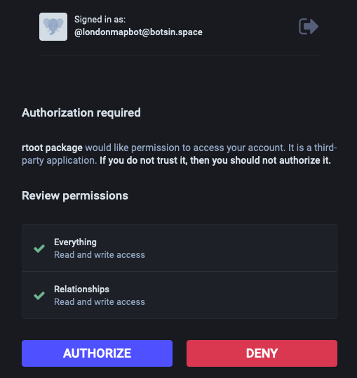
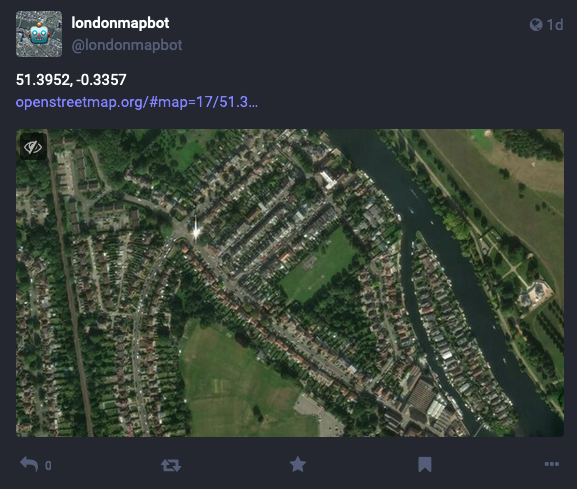

install.packages("rtoot") # on CRAN
rtoot::auth_setup(
instance = "botsin.space", # the Mastodon server the account is on
type = "user", # i.e. for posting from R
name = "londonmapbot", # name the token file
clipboard = TRUE # copy to clipboard
)tl;dr
I’ve (finally) ported the londonmapbot Twitter bot to Mastodon. Like a mammoth rising from the ashes.
TOOOOOOOT
Twitter is burning to the ground, yada yada.
For example, it appears that the free API tier will disappear soon. Soon like… today. Oh wait, maybe not yet?1 Cool customer communication, brah.
Anyway, this news will obviously devastate contributors and fans of the mapbotverse Twitter list.
You don’t know what the mapbotverse is? Oof. It’s a collection of 25 bot accounts that take some inspiration from my londonmapbot account, which uses GitHub Actions and the {rtweet} package to tweet on schedule a picture of a random spot in Greater London via MapBox.
And so it’s time to update the code behind londonmapbot so that it continues to post to Twitter for as long as it survives. But also so that it lives on by posting to Mastodon via the {rtoot} package as well.
Mastowhat? Something something federated Twitter-replacement sort of thing. Tooooooot tooooooot.
ℹ️ Update
I finally turned off londonmapbot on Twitter in May 2023.
Masto-do or masto-do-not
I’m slightly behind the curve on this: Matt Kerlogue has already ported his narrowbotR (‘narrow boater’) bot from Twitter to Mastodon and written about it.
The fix was fairly rudimentary in the end, thanks to standing on the shoulder of mammoths. Particularly the creators of the {rtoot} R package.
{rtoot} lets you interact with the Mastodon API. It’s a sort-of analogue to the {rtweet} package for the Twitter API. {rtoot} was stood up very quickly by David Schoch (with co-author Chung-hong Chan and contributor Johannes Gruber) when it became clear that Mastodon was becoming the platform-du-jour for nerds.
Set up Mastodon
It’s easier to set yourself up with API access for Mastodon compared to Twitter:
- Set up a Mastodon account on the dedicated bot server botsin.space (londonmapbot is @londonmapbot@botsin.space).2
- Install the {rtoot} package.
- Authorise yourself with Mastodon and get an API token.
- ???
- Absolutely do not profit whatsoever.
Steps 2 and 3 look like this:
This process interrupts you to interactively authorise the {rtoot} package in a browser window and copy a big long code to a dialogue box that appears in your R session.

It’ll then return:
Token of type "user" for instance botsin.space is valid
Token (in environment variable format) has been copied to clipboard.
<mastodon bearer token> for instance: botsin.space of type: user I pasted this API token to a safe place and also stored it as a GitHub repo secret in the londonmapbot GitHub repo so it could be referred to while the GitHub Action was running.
Post to Mastodon
Now we can use the post_toot() function to… toot a post. Publish a toot? Entoot a noote. It requires a token argument that takes a special ‘bearer token’ with a particular structure that’s not too dissimilar from what the rtweet package expects of the object passed to its own token function.
Aside: token setup is made easy in {rtweet} thanks to the rtweet_bot() function, to which you can pass your API keys and secrets. It’s a little less obvious in {rtoot}, which was initially built with the intention of running API calls from your personal machine, so you could just store your keys in your .Renviron file or whatever.
But actually you can just mimic how {rtweet} accepts the token. To do this, I did not use my brain at all and simply ripped-off Matt Kerlogue’s post.3 My updated R script now contains this:4
mastodon_token <- structure(
list( # it's just a list
bearer = Sys.getenv("RTOOT_DEFAULT_TOKEN"),
type = "user", # i.e. to post from R
instance = "botsin.space" # the server
),
class = "rtoot_bearer" # special token class
)Where RTOOT_DEFAULT_TOKEN is that API token from earlier, which is required for accessing Mastodon. As mentioned, it’s stored as a GitHub repo secret and called into the GitHub Action environment thanks to the ${{ secrets.RTOOT_DEFAULT_TOKEN }} call in the YAML file.
This object can be passed quite happily to the post_toot() function.
rtoot::post_toot(
status = latlon_details,
media = temp_file,
alt_text = alt_text,
token = mastodon_token
)Where the status (body text), media (image file) and alt_text (alternative text for the image) objects have been generated already (see the R script for details).
This is then executed on schedule according to the cron string5 specified in the YAML file (currently twice a day at 0914 and 1714) to publish stuff like this:

Await Twitter implosion
I want the bot to keep posting to Twitter for as long as I’m allowed to. In other words, we should try to post a tweet and catch any error silently, without disrupting the GitHub Action. So naturally I wrapped post_tweet() in a tryCatch() statement, yes? No, actually I used purrr::possibly() instead.
Why? Basically because the syntax is easy to remember, lol. And what difference does it make to have one extra dependency for this task? To use it, you wrap your function of interest in possibly() and then it can fail without erroring-out the whole function.
possibly_post_tweet <- purrr::possibly(rtweet::post_tweet)
possibly_post_tweet(
status = latlon_details,
media = temp_file,
media_alt_text = alt_text,
token = twitter_token
)Fiddle while Frisco burns
While I was messing about with the londonmapbot code, I made a few things in the repo a bit more generic. For example, I altered the name of the GitHub Actions YAML file and the R script to be called ‘post-image’. This is more descriptive and it removes the need for someone forking the repo to have to manually change the name away from ‘londonmapbot’. You are so welcome.
Parp
Farewell, until the next time we have to port londonmapot to another API-enabled microblogging site. We’ve had bird- and mammal-themed sites; my prediction is that the next site will be called ‘Seacucumber’ and we won’t ‘tweet’ or ‘toot’, we’ll ‘eviscerate’.6
I mean, inverting one’s stomach is a daily reaction on Twitter anyway, amirite?
Environment
Session info
Last rendered: 2023-07-02 16:08:26 BSTR version 4.3.1 (2023-06-16)
Platform: aarch64-apple-darwin20 (64-bit)
Running under: macOS Ventura 13.2.1
Matrix products: default
BLAS: /Library/Frameworks/R.framework/Versions/4.3-arm64/Resources/lib/libRblas.0.dylib
LAPACK: /Library/Frameworks/R.framework/Versions/4.3-arm64/Resources/lib/libRlapack.dylib; LAPACK version 3.11.0
locale:
[1] en_US.UTF-8/en_US.UTF-8/en_US.UTF-8/C/en_US.UTF-8/en_US.UTF-8
time zone: Europe/London
tzcode source: internal
attached base packages:
[1] stats graphics grDevices utils datasets methods base
loaded via a namespace (and not attached):
[1] htmlwidgets_1.6.2 compiler_4.3.1 fastmap_1.1.1 cli_3.6.1
[5] tools_4.3.1 htmltools_0.5.5 rstudioapi_0.14 yaml_2.3.7
[9] rmarkdown_2.22 knitr_1.43.1 jsonlite_1.8.5 xfun_0.39
[13] digest_0.6.31 rlang_1.1.1 evaluate_0.21 Reuse
CC BY-NC-SA 4.0